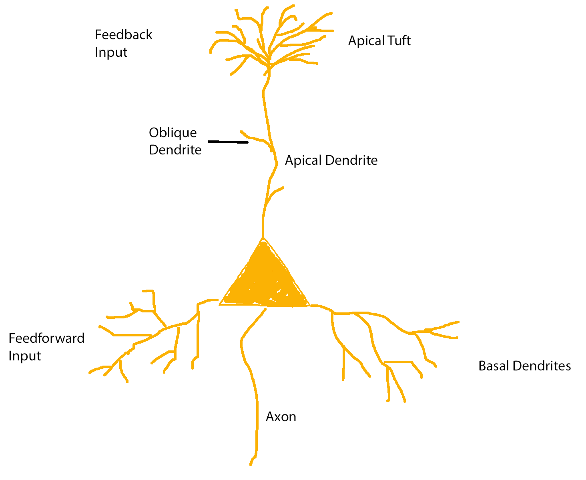

Contents:
General Terminology
Afferent vs Efferent Neurons
In an effort to create sane terminology, neuroscientists have decided to call neurons that receive sensory input and transmit it to the central nervous system
afferent neurons, while neurons that send information in the opposite direction are called
efferent.
Coincidence Detection
Since a coincidence is by definition meaningless it seems pointless to want to detect one. Taking a more literal definition of the word, it becomes clear that we are trying to detect inputs that coincide, i.e. arrive at approximately the same time.
The Neocortex
The neocortex, part of the cerebral cortex, is a part of the brain that evolved in mammals comparatively recently (hence
neocortex). It comprises around 80% of the human brain
[3] and is therefore often speculated to be responsible for the emergence of higher intelligence.
The neocortex appears to have a distinct structure which is characterised by its organisation into layers as well as columns. The columnar organisation is based on the observation that neurons stacked on top of each other tend to be connected and have similar response properties, while only few connections exist between columns. Columns are hence hypothesised to be a basic functional unit in the cortex, although this is somewhat debated in the neuroscience community
[4].
The further organisation into six layers was proposed by Brodmann in 1909.
Layer 1: Next to no cell bodies, mostly connections between axons and the apical dendrites of
pyramidal neurons [6].
Layer 2&3:
Layer 4: Receives input from either the thalamus or other cortical regions and relays signals to layer 2&3
[6].
Layer 5: Houses large pyramidal neurons with axons leaving the cortex
[6].
Layer 6: Forms loops with the thalamus, i.e. sends signals to neurons in the thalamus who then in turn send signals to layer 1 neurons in the same column
[6].
Layer 4 is also called the
granular layer while layers 1-3 are called
supragranular and layers 5 & 6 are called
infragranular.
Drawing by Santiago Ramon y Cajal [5]
The Thalamus
Action Potentials
Input to the receptors of a neuron can either be inhibitory, i.e. decreasing the probability of producing an action potential (often through GABA), or excitatory, i.e. increasing the probability of producing an action potential (often through glutamate).
Postsynaptic Potentials
Pyramidal Neurons
Pyramidal neurons are the most abundant type of neuron in the neocortex, constituting about 70-85% of cells
[0]. In contrast to the remaining neurons in the neocortex, so called
interneurons, which are mostly inhibitory, pyramidal neurons are excitatory
[0].
As the name suggests, pyramidal neurons have a cell body (or
soma) shaped like a pyramid. This cell body is said to have a
base at the bottom and an
apex at the top.
Pyramidal neurons have two groups of dendrites:
basal dendrites, originating at the base of the soma, and one
apical dendrite, originating at the apex of the soma. This apical dendrite terminates (not always, but mostly in layer 1
[0]) in what is called the
apical tuft. The dendrites branching off from the main apical dendrite are called oblique dendrites.
These apical and basal dendrites are not just differently located, they also appear to serve different functions.
Basal dendrites receive regular feed-forward input, while the apical tuft dendrites receive feed-back input.

While the Na
+ action potential (AP) initiation zone at the soma was long thought to be the only one (?), it is now clear that there is a second Ca
2+ AP initiation zone near the tuft
[1].
These two AP initiation zones influence each other, i.e. a subthreshold excitatory postsynaptic potential in the apical tuft can cause APs in the axon when it coincides with a back-propagating AP from the axon
[2].
[0] DeFelipe, J., & Fariñas, I. (1992). The pyramidal neuron of the cerebral cortex: morphological and chemical characteristics of the synaptic inputs. Progress in Neurobiology, 39(6), 563–607. http://doi.org/10.1016/0301-0082(92)90015-7
[1] Yuste, R., Gutnick, M. J., Saar, D., Delaney, K. R., & Tank, D. W. (1994). Ca2+ accumulations in dendrites of neocortical pyramidal neurons: An apical band and evidence for two functional compartments. Neuron. http://doi.org/10.1016/0896-6273(94)90457-X
[2] Larkum, M. E., Zhu, J. J., & Sakmann, B. (1999). A new cellular mechanism for coupling inputs arriving at different cortical layers. Nature, 398, 338–341.
[3] Markram, H., Toledo-Rodriguez, M., Wang, Y., Gupta, A., Silberberg, G., & Wu, C. (2004). Interneurons of the neocortical inhibitory system. Nature Reviews Neuroscience, 5(10), 793–807. http://doi.org/10.1038/nrn1519
[4] Goodhill, G. J., & Carreira-Perpiñan, M. A. (2002). Discovery of columnar organization. Brain, 1–9.
[5] y Cajal, S. R. (1899). Comparative study of the sensory areas of the human cortex. Clark University.
[6] Shipp, S. (2007). Structure and function of the cerebral cortex. Current Biology, 17(12), 443–449. http://doi.org/10.1016/j.cub.2007.03.044